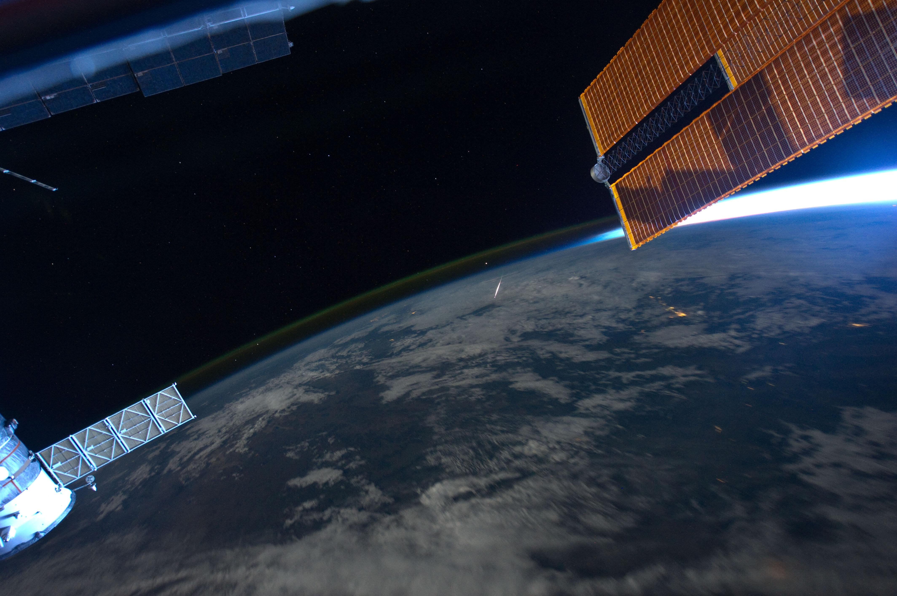

流星雨观测 Observation
当地球运行至流星体群，大量流星体进入地球大气层，在夜空中看起来像是有许多的流星从天空中一个所谓的辐射点发射出来。天文学中一般用流星雨辐射点所在的星座或附近比较明亮的星名来命名该流星群。例如，双子座流星雨的辐射点就位于双子座中。
When there are lots more meteors, you're watching a meteor shower. Meteor showers are usually named after a star or constellation that is close to the so-called radiant where the meteors appear to originate in the sky.
一些流星雨每年或每隔一段时间出现，因为地球会定期经过彗星（少数情况下是小行星）留下的尘埃碎片，从而定期带来一场流星雨。下面，就让我们来看看2023年主要流星雨的观测时间，以及观测流星雨的注意事项。
Some meteor showers occur annually or at regular intervals as the Earth passes through the trail of dusty debris left by a comet (and in a few cases asteroids). Now, let's take a look at the 2023 major meteor shower calendar and some tips for observation.
2023年主要流星雨观星日程
2023 Major Meteor Shower Calendar
| 流星雨 | 活跃期 | 峰值日 |
|---|---|---|
| 象限仪座流星雨 | 12.26-1.16 | 1.4 |
| 天琴座流星雨 | 4.15-4.29 | 4.23 |
| 宝瓶座流星雨 | 4.15-5.27 | 5.6 |
| 南三角洲水瓶座流星雨 | 7.18-8.21 | 7.31 |
| 英仙座流星雨 | 7.14-9.1 | 8.13 |
| 猎户座流星雨 | 9.26-11.22 | 10.21 |
| 狮子座流星雨 | 11.3-12.2 | 11.1 |
| 双子座流星雨 | 11.19-12.24 | 12.14 |
| 小熊座流星雨 | 12.13-12.24 | 12.22 |
观星小贴士 Tips
·如何观测 How
| 观看流星其实非常简单：走出门，抬头看！ | Watching a meteor shower is easy: just go outside and look up! |
| 通常来说，当地时间午夜后观赏效果更佳。 | Generally, they are better after midnight. |
| 面朝着地球自转的方向能看见更多的流星。 | Facing the direction of Earth's orbita motion means more meteors. |
| 如果你恰巧在空间站上，你得低下头去看流星。 | If you happen to be on the Space Station, you have to look down to see a meteor. |
下图是从国际空间站俯拍的流星。

·注意事项 Dos & Don'ts
- 夏天晚上也会冷，一定要准备好长袖。
- 注意野生动物，野猪、蛇等。
- 虽然流星让你非常激动，但是请不要大喊大叫。
- 注意治安，儿童请由成人陪同。
- Please prepare long-sleeved clothing as it is cold at night even in summer.
- Watch our for wild animals, such as wild boars and snakes.
- Please do not scream in public even though you are very excited about the shooting stars.
- Children must be accompanied by adults.